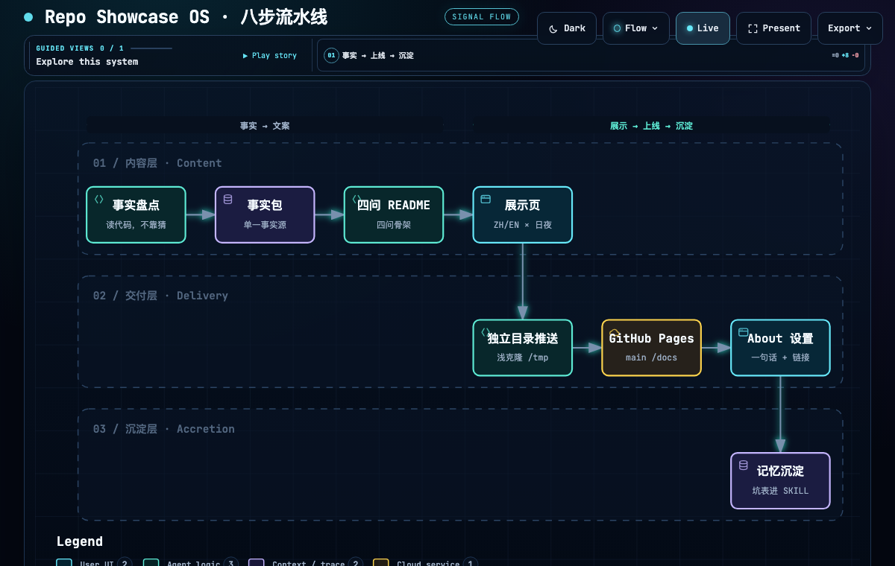
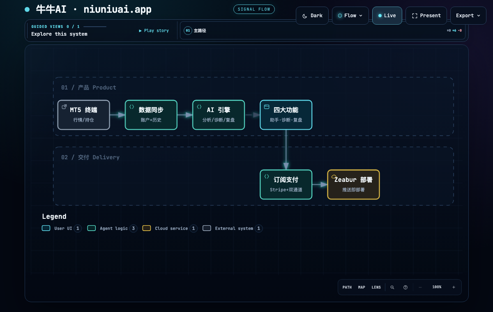
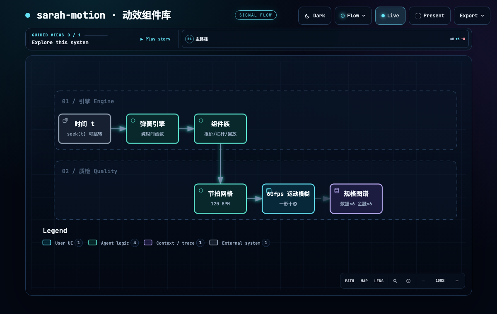
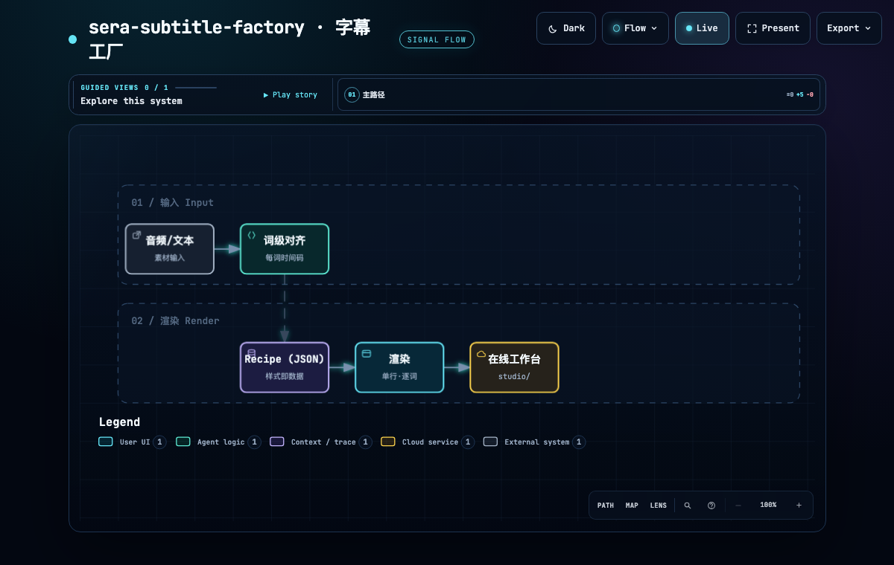
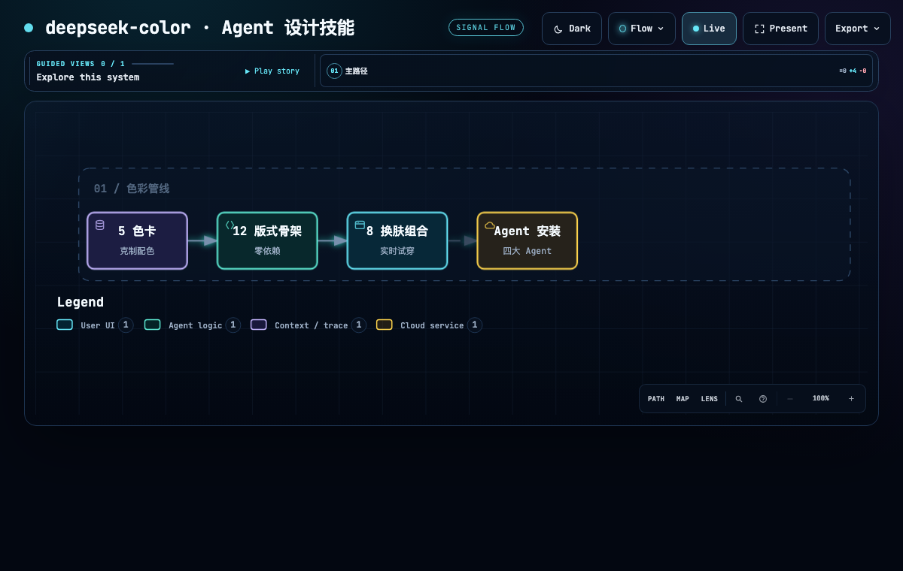
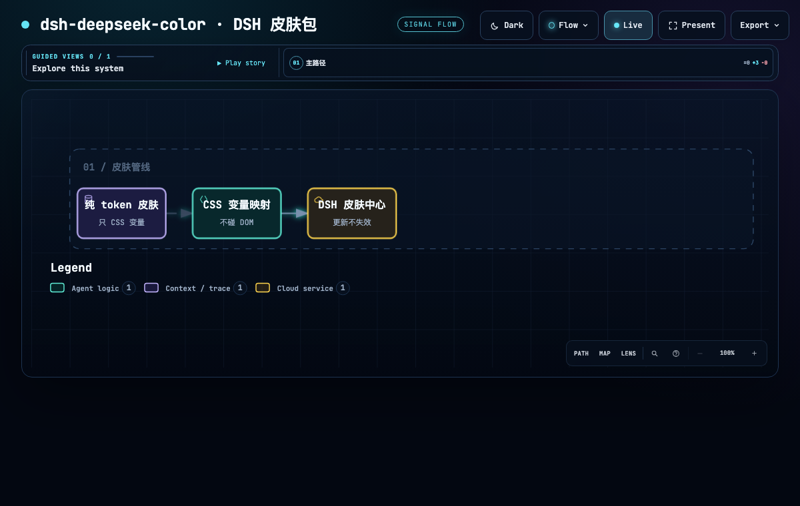
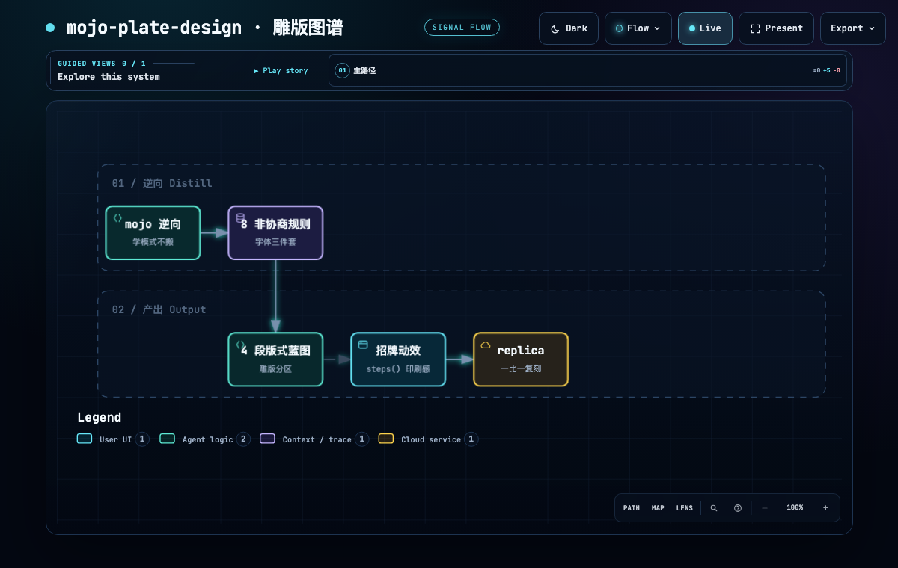
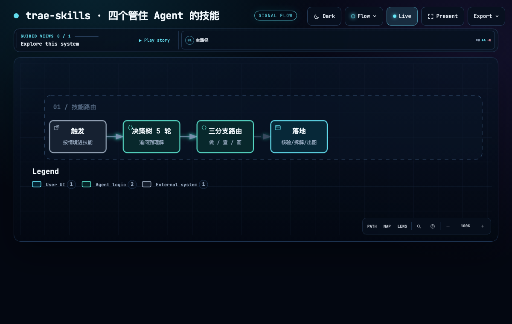

每个项目一张架构流程（workflow），由 Archify 从语义化 JSON 生成：节点/泳道自动布局、可 hover 探索、日夜主题、validate --quality showcase 9 项验收。事实源 = 各仓库 showcase/project.json。
validate --quality showcase
showcase/project.json








docs/arch/
docs/assets/arch/